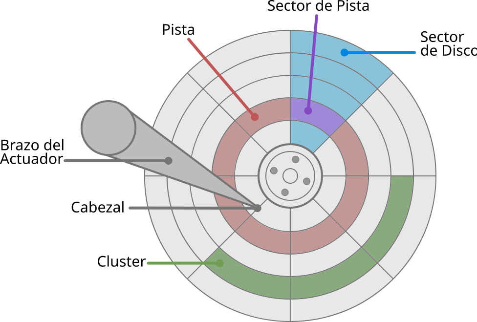
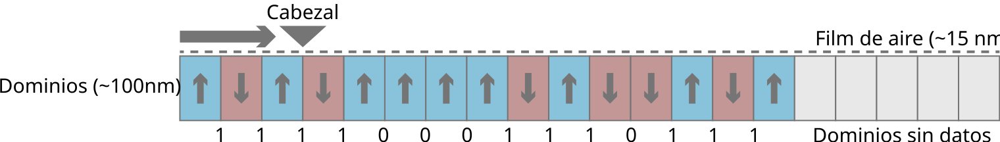
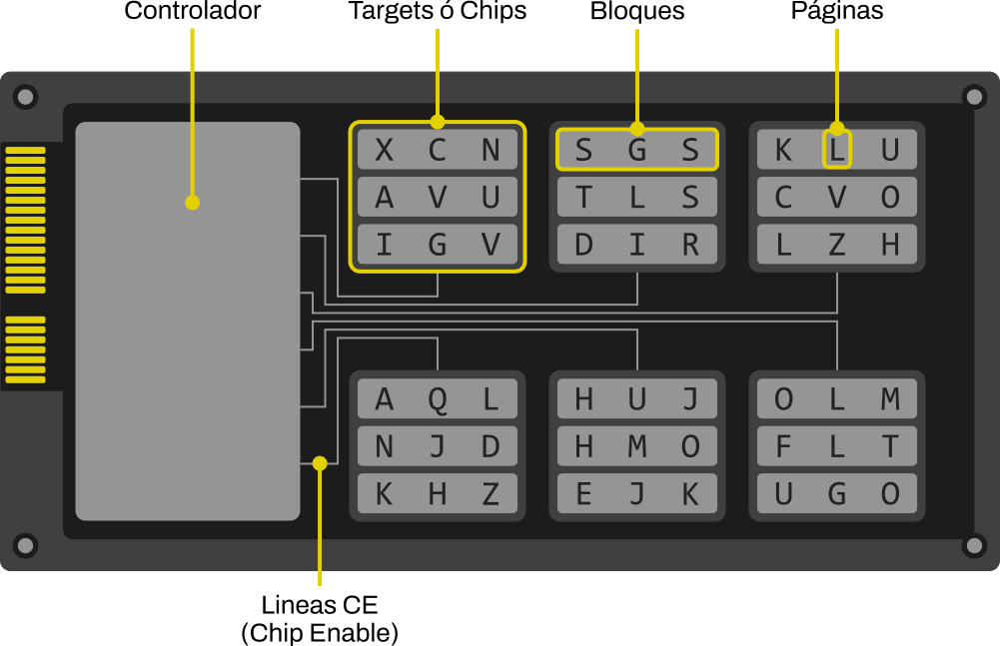

Los HDD (Discos Rígidos Magneticos) y los SSD (Discos de Estado Solido) son dispositivos con la función de conservar datos de manera persistente dentro de un ordenador, la cual realizan de manera muy distinta. A continuación podemos probar como funciona a grandes rasgos cada uno.
Un HDD guarda cada dato en una posición física fija. La dirección lógica que le pide el ordenador y la dirección física del disco son la misma cosa. El "sector 5", por ejemplo, será siempre el mismo lugar físico en el plato.
Tengamos en mente las partes principales del disco rígido:

El actuador mueve el brazo hasta ubicar el cabezal sobre la pista y el sector indicados. Una vez ahí, el cabezal queda a apenas unos nanómetros de la superficie, lista para leer o escribir sobre esa posición exacta.
Este diagrama interactivo muestra como se accede a cada sector en un disco rígido. En este ejemplo el cabezal se encuentra fijo en pos de la simplicidad, pero en un disco real este naturalmente se mueve de un lado al otro. Podes ver este video para observar el funcionamiento más en detalle.
Cada dato se guarda orientando la magnetización de millones de dominios microscópicos (apenas 90 × 100 × 125 nanómetros cada uno). El cabezal enfoca un campo magnético en su punta, salta un espacio de aire de 15 nanómetros y orienta los átomos del dominio en una dirección u otra, y el disco, mientras no ocurra modificación, permanece durante años en ese estado.
Para leer, el cabezal no mira hacia dónde apunta cada dominio, sino si hay un cambio de dirección respecto al dominio anterior: cambio = 1, sin cambio = 0.

Como cada sector vive en un lugar fijo del plato, un mismo archivo puede terminar repartido en sectores que no están uno al lado del otro (fragmentación) y es una de las razones por las que un HDD se vuelve más lento con el uso.
A diferencia de los HDDs, los discos de estado sólido no tienen partes móviles. El término "estado sólido" se refiere a circuitos o dispositivos en los que la electricidad fluye a través de materiales semiconductores sólidos (como los chips de silicio) en lugar de desplazarse por el vacío o fluidos, o de depender de movimiento mecánico.

El controlador de la unidad es el que decide en qué página y dentro de qué bloque cae cada escritura, y donde se mantiene la tabla de traducción (FTL).
| slot | página física | bloque | valor |
|---|
En los siguientes videos se puede ver más en detalle la arquitectura de un SSD y de los chips que lo conforman.
Cada celda de una memoria flash es un transistor con una compuerta flotante: una estructura que atrapa electrones y los retiene durante años sin electricidad. Escribir es empujar electrones hacia esa compuerta (o no hacerlo); leer es medir el voltaje que produce esa carga.
De ahí surge la regla clave del SSD: borrar requiere sacar esos electrones con un voltaje alto, y solo puede hacerse sobre un bloque entero, nunca sobre una celda o página aislada. Por eso actualizar un dato no lo sobrescribe: se escribe en una página nueva y la vieja queda pendiente de borrado a nivel de bloque.
Wear leveling
Cada celda soporta solo cierta cantidad de ciclos antes de degradarse. La tabla de traducción evita la sobrescritura directa y permite al controlador repartir las escrituras entre todas las celdas en vez de reutilizar siempre las mismas. Gracias a esto un SSD envejece de forma mucho más pareja.
TRIM y limpieza en segundo plano
En el ejemplo interactivo, un bloque solo se recicla manualmente. En una unidad real, el sistema operativo avisa al controlador (vía TRIM) qué páginas ya no pertenecen a ningún archivo, y este aprovecha los momentos de inactividad para reciclar esos bloques de forma anticipada, sin esperar a quedarse sin espacio.
Fragmentación y borrado de datos
En un HDD, borrar un archivo solo marca ese sector como disponible: los dominios magnéticos siguen intactos hasta que algo los sobrescriba. Por eso se pueden recuperar archivos "borrados" y por eso tiene sentido desfragmentar: reordenar los sectores dispersos tiene un beneficio real, ya que reescribir en el lugar es directo y barato.
En un SSD, nada de eso aplica. Desfragmentar no sirve: la posición lógica no corresponde a una ubicación física fija, así que ordenar no ahorra nada y solo genera desgaste. Y gracias a TRIM y a la limpieza en segundo plano, los datos borrados desaparecen físicamente mucho antes que en un HDD, lo que vuelve la recuperación poco confiable en la práctica.
Elegí una respuesta en cada pregunta. Podés cambiarla libremente hasta encontrar la correcta.